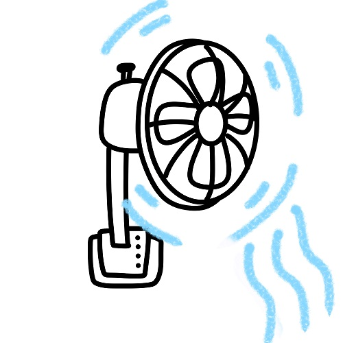

<div *ngIf="aaa==2" class="d-flex justify-content-center">
    
</div>
<div *ngIf="aaa==1" class="d-flex justify-content-center">
    
</div>
<div *ngIf="aaa==0" class="d-flex justify-content-center">
    
</div>


<div class="d-flex justify-content-center">
    <button class="btn btn-warning" (click)="fsturnOff()">关闭</button>
    <button class="btn btn-success" (click)="fsdi()">低档</button>
    <button class="btn btn-danger" (click)="fsgao()">高档</button>
    <button class="btn btn-primary" [routerLink]="['../product']">返回</button>
</div>